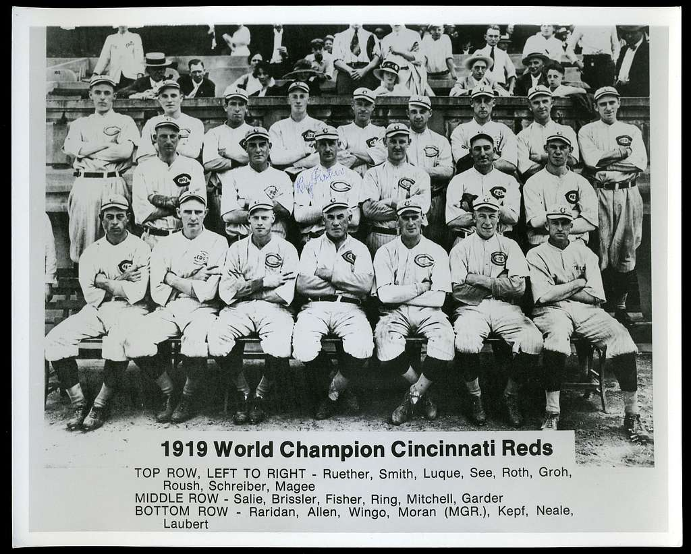

The 1919 Cincinnati Reds

The Black Sox Scandal
The 1919 World Series between the Cincinnati Reds and the Chicago White Sox became one of the most infamous events in baseball history, later known as the Black Sox Scandal. Several White Sox players secretly agreed to throw games in exchange for money from gamblers, deliberately making errors and striking out to ensure the Reds’ victory. While the Reds played hard and took the series 5–3, the scandal overshadowed their achievement and cast a dark cloud over the sport. When the plot was uncovered, eight White Sox players were banned for life, leading to major reforms in baseball’s governance and the appointment of the first Commissioner of Baseball to restore public trust in the game.
The 1919 Cincinnati Reds were a professional baseball team that played in Major
League Baseball (MLB) during the 1919 season. They were a member of the National
League (NL) and played their home games at Redland Field, which is now known as
Great American Ball Park. The team was managed by Pat Moran and had a successful
season, finishing with a record of 96 wins and 44 losses, which was the best in
the National League that year. The Reds were known for their strong pitching
staff, which included players like Hod Eller and Slim Sallee, as well as their solid defense and timely hitting. The team was led by several key players, including outfielder Edd Roush, first baseman Jake Daubert, and catcher Ivey Wilson. The 1919 season was particularly notable for the Reds because they went on to win the World Series, defeating the Chicago White Sox in a best-of-nine series. However, the series was later marred by the infamous "Black Sox Scandal," in which several White Sox players were accused of intentionally losing games in exchange for money from gamblers. Despite the controversy surrounding the series, the 1919 Cincinnati Reds are remembered as one of the great teams in baseball history, and their World Series victory remains a significant achievement in the franchise's history.
1919 Cincinnati Reds Roster
| Player Name |
Position |
BA |
HR |
| Hod Eller |
Pitcher |
2.39 ERA |
137 Ks |
| Ivey Wingo |
Catcher |
.273 |
0 |
| Jake Daubert |
First Baseman |
.308 |
2 |
| Morrie Rath |
Second Baseman |
.264 |
1 |
| Heinie Groh |
Third Baseman |
.309 |
5 |
| Larry Kopf |
Shortstop |
.270 |
0 |
| Sherry Magee |
Left Fielder |
.215 |
0 |
| Edd Roush |
Center Fielder |
.321 |
4 |
| Greasy Neale |
Right Fielder |
.227 |
1 |
| Pat Duncan |
Manager |
N/A |
N/A |